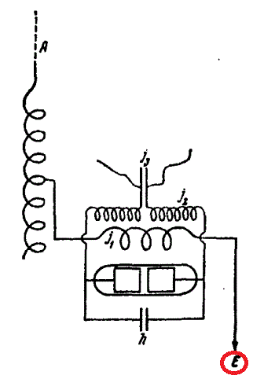

История беспроволочного телеграфа
Web-Quest
Вариант 4
которые изобрел А.С. Попов?
В конце IX века
В начала XX века
В середине IX века
2. Почему Г. Маркони считается первым изобретателем радио?
Сумел первым рассказать о своем изобретении на Женевской конференции
Сумел первым запатентовать свое изобретение
Сумел первым обьяснить его назначение и пользу для человечества
3. При каких обстоятельствах Г. Маркони смог продемонстрировать свое изобретение?
Передавал сообщения по радио в газету во время чемпионата по футболу
Передавал сообщщения по радио в газету во время своего выступления на конференции
Передавал сообщения о парусных гонках в ирландскую газету по радио с парохода
4. Зачем Г. Маркони включил в свой радиоприемник «джиггер»?
Для увеличения силы тока
Для усиления магнитного поля
Для выработки электромагнитных волн
5. Какой достоинство в разработку радиотелеграфа внес «джиггер»?
Позволило в несколько раз повысить чувствительность первых радиоприемных станций
Позволило понизить нагрузку на сеть
Позволило уменшить напряжение электрического поля
6. Что изображено под «E» на этом рисунке?

Конденсатор
Заземление
Обмотка «джиггера»
7. Как Г. Маркони использовал свой «джиггер»?
Настраивал колебательный контур и подключал к нему «джиггер»
Включал в цепь антенны несколько индуктивных катушек и «джиггер»
Подключал конденсатор и «джиггер» и получал колебательный контур